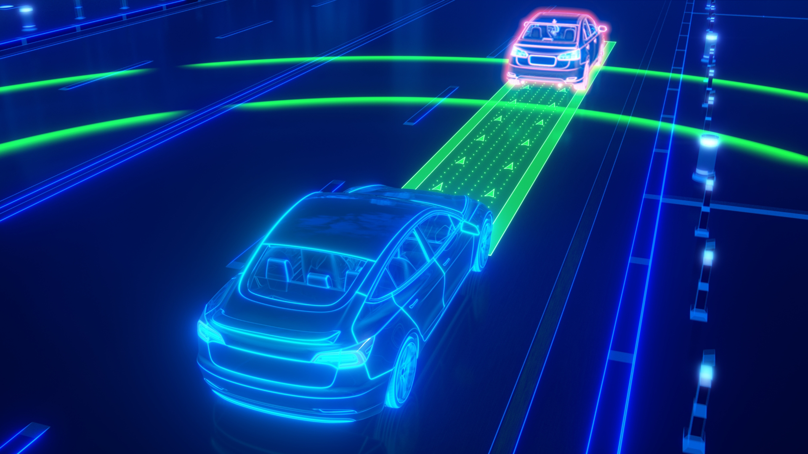

Level 2 of autonomous driving can assist the driver with steering, accelerating and braking systems. It can also be referred to as "Hands-off" assistance. However, the driver is required to intervene during emergency cases. This requires the need for drivers' attention at all times.
Features in level 2 autonomous vehicles include:
Lane centering is regarded as one of level 2 autonomous driving technology that helps the driver to keep the vehicle centered in the middle of the lane in which it is traveling. However, this does not count as a replacement for driver intervention or readiness.
The automatic braking system is a safety technology employed in level 2 autonomous vehicles that activates the vehicle's braking system in hazardous situations. Some advanced braking systems intervene when it detects a future collision and completely bring the vehicle to halt before the accident occurs. However, this feature also would require ample amounts of driver readiness.